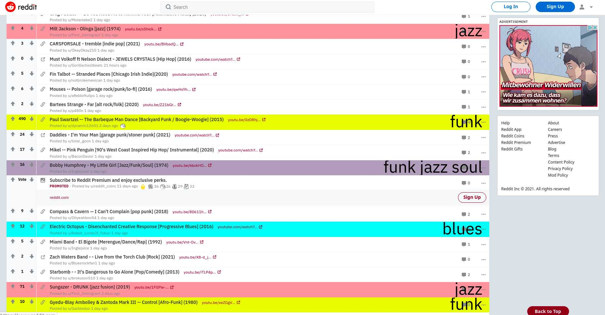
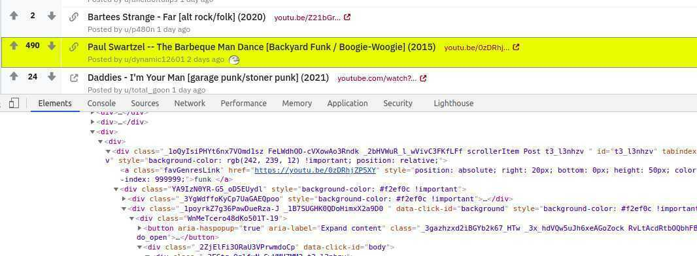
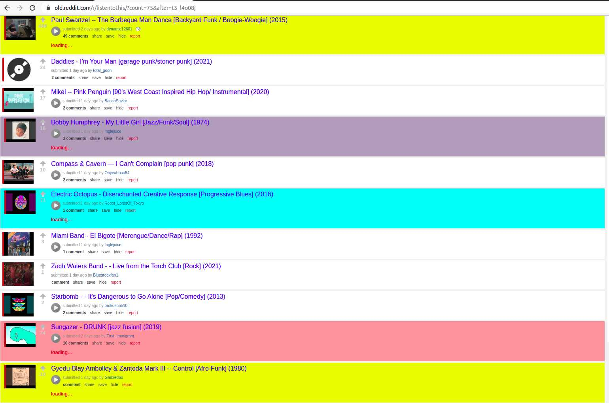
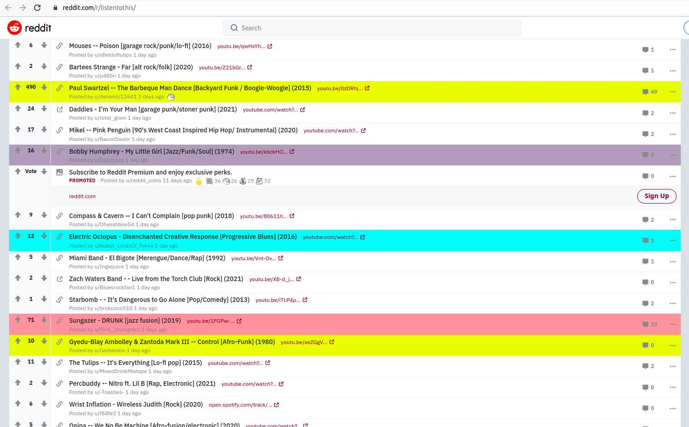
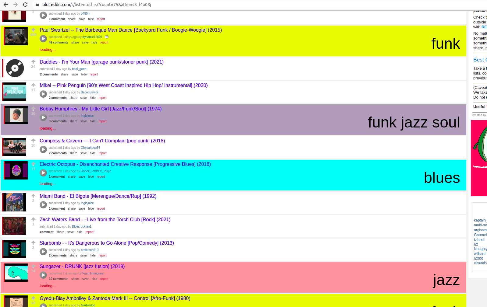
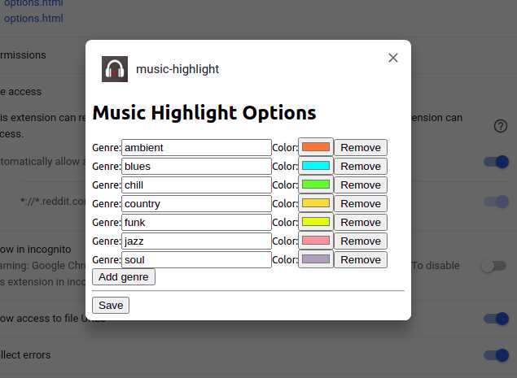
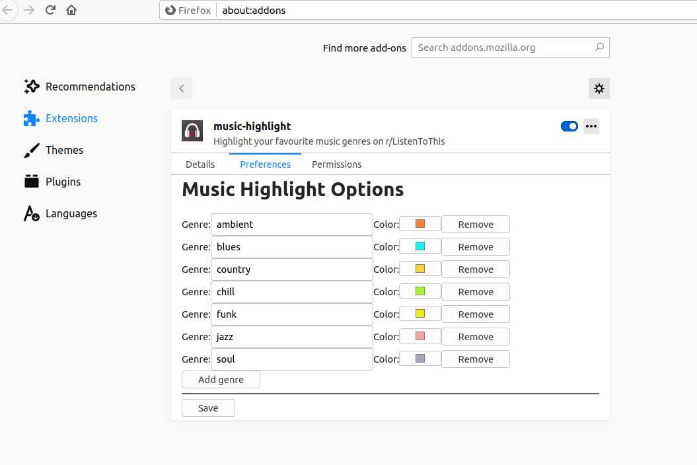
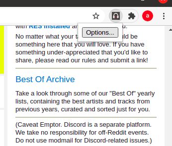
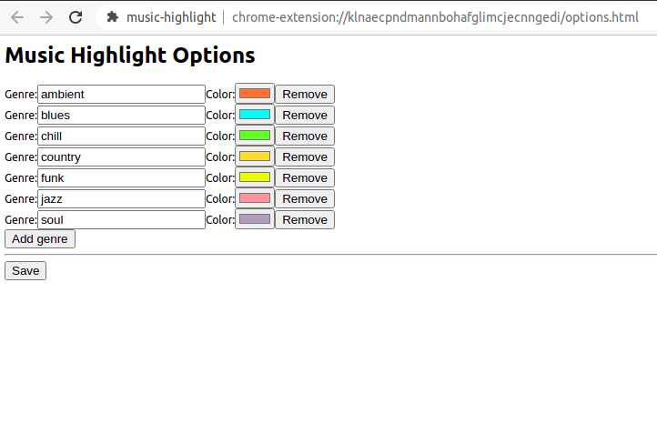

A Browser Extension to highlight your favorite music on r/ListenToThis
When I want to discover new and overlooked music, I go to https://www.reddit.com/r/listentothis/. Because there are a lot of new songs added every day, I need a way to quickly find my favorite genres. Fortunately, each post contains the genre info in its title so... I built a browser extension that highlights with different colors the posts containing some keywords (genres):

You can find the full source code here: https://github.com/alexadam/ListenToThis-Highlight
How to make a Browser Extension
Create a folder named music-highlight. This will be the root folder of the extension:
mkdir music-highlight
cd music-highlight
Each browser extension must have a manifest file containing metadata like: author's name, description, permissions, license, what scripts are included etc. You can find more details about it here: https://developer.mozilla.org/en-US/docs/Mozilla/Add-ons/WebExtensions/manifest.json
Create a file manifest.json and paste:
{
"manifest_version": 2,
"name": "music-highlight",
"version": "1",
"author": "Your Name",
"homepage_url": "https://www.reddit.com/r/listentothis/",
"description": "Highlight your favorite music genres on r/ListenToThis",
"content_scripts": [{
"matches": ["*://*.reddit.com/r/listentothis*"],
"js": ["colors.js"]
}],
"permissions": [
"activeTab",
"https://www.reddit.com/r/listentothis/",
"https://old.reddit.com/r/listentothis/",
"storage"
]
}
In the content_scripts section we tell Chrome or Firefox to run colors.js on the web pages whose URL matches that regex pattern - in our case both old & new reddit.
By injecting color.js in the Reddit's page, we can access and modify its content using the standard DOM APIs (change colors, add new HTML elements etc). More about the content scripts: https://developer.mozilla.org/en-US/docs/Mozilla/Add-ons/WebExtensions/Content_scripts
How color.js works:
- for each post on the page
- get the post's title & url
- if the title contains a genre on your list
- change its background color
How do we find a find a post? Right click on it -> Inspect element. We'll get all the HTML elements containing the scrollerElement class or the thing class, on the old Reddit.

Let's create a file colors.js then add the function that returns all posts:
const getAllPosts = () => {
// old reddit
const allPosts = document.getElementsByClassName('thing');
if (allPosts.length === 0) {
// new reddit
return document.getElementsByClassName('scrollerItem');
}
return allPosts
}
Then, create a function that extracts the title:
const getTitle = (post) => {
// old reddit
const titleElem = post.querySelector('a.title');
// new reddit
if (!titleElem) {
return post.querySelector('h3');
}
return titleElem
}
The title format is like Band - Song [genre1/genre2, genre3] (2020) and we only need what's inside the square brackets:
const getGenresAsString = (titleElem) => {
const text = titleElem.innerText.toLowerCase()
// Extract the genres from the title
const genresRegex = /\[([^\]]+)\]/g
const match = genresRegex.exec(text)
// Skip over posts that are not properly formatted
if (!match) {
return null
}
return match[0]
}
Add a list with our favorite genres and some colors:
const favoriteGenres = {
'ambient': '#fa8335',
'blues': '#0df9f9',
'country': '#fad337',
'chill': '#a8f830',
'funk': '#F2EF0C',
'jazz': '#fba19d',
'soul': '#aca2bb',
}
Then, create a function that will iterate through all of our fav. genres defined in the list above. If a genre is mentioned in the string returned by getGenresAsString, the function returns its color (or the color of the last one matched, if there are multiple matches).
const getBGColor = (allGenresStr, favGenres) => {
let bgColor = null
// Test if the post contains any of our fav. genres
for (const genre of Object.keys(favGenres)) {
const genreRegex = new RegExp('.*' + genre + '.*', "i")
if (!genreRegex.test(allGenresStr)) {
continue
}
bgColor = 'background-color: ' + favGenres[genre] + ' !important'
}
return bgColor
}
Before trying it, there is another problem we have to solve... the new Reddit loads the content dynamically and, at the time color.js runs on the page, there is no useful data.
Moreover, when you scroll down, new content is added and we have to reapply the logic on it and update the colors. So we need a new content listener that will trigger the code:
const observeDOM = (() => {
const MutationObserver = window.MutationObserver || window.WebKitMutationObserver;
const eventListenerSupported = window.addEventListener;
return (obj, callback) => {
if (MutationObserver) {
const obs = new MutationObserver((mutations, observer) => {
if (mutations[0].addedNodes.length)
callback(mutations[0].addedNodes);
});
obs.observe(obj, {
childList: true,
subtree: true
});
} else if (eventListenerSupported) {
obj.addEventListener('DOMNodeInserted', callback, false);
obj.addEventListener('DOMNodeRemoved', callback, false);
}
};
})();
// detect if on the new Reddit before the content is loaded
const targetElem = document.getElementById('2x-container')
if (targetElem) {
observeDOM(targetElem, (addedNodes) => {
// whenever new content is added
addColorsOnSongs(favoriteGenres);
});
}
Let's test it...
On Chrome:
- Navigate to chrome://extensions
- Toggle Developer Mode (top right)
- click on Load Unpacked
- Select the extension's folder music-highlight
- click Open
On Firefox:
- Navigate to about:debugging
- click on This Firefox (top left)
- click on Load Temporary Add-on
- go to the extension's folder
- select manifest.json
- click Open
Then visit https://old.reddit.com/r/listentothis/ and you should see:

and https://www.reddit.com/r/listentothis/

Solving an UX Problem
Although highlighting with different colors makes it easier to find interesting music on that list, we can still improve it. I want to add an element that displays the genres with a bigger font and, when you click on it, you go directly to the linked song - instead of opening the reddit comments page.
So, if a post contains at least one of my fav. genres:
- create a hyperlink HTML Element
- with the href pointing to the source
- and all the matched genres as the inner text
- then append it to the reddit's post
Let start by adding some useful functions - getSongURL extracts the source URL from the post:
const getSongURL = (titleElem, post) => {
// old reddit
let href = titleElem.href
// new reddit
if (!href) {
const extLink = post.querySelector('a.styled-outbound-link')
if (extLink) {
return extLink.href
}
}
return href
}
And createSongLink creates the HTML Element:
const createSongLink = (titleElem, post, genresText) => {
post.style.position = 'relative'
let linkElem = document.createElement('a')
linkElem.className = "favGenresLink"
linkElem.style.position = 'absolute'
linkElem.style.right = '20px'
linkElem.style.bottom = '0'
linkElem.style.height = '50px'
linkElem.style.color = 'black'
linkElem.style.fontSize = '50px'
linkElem.style.zIndex = '999999'
linkElem.innerText = genresText
linkElem.href = getSongURL(titleElem, post)
return linkElem
}
Modify getBGColor to return both the colors and all the matched genres, as text:
const getBGColor = (allGenresStr, favGenres) => {
let bgColor = null
let favGenresStr = ''
// Test if the post contains any of our fav. genres
for (const genre of Object.keys(favGenres)) {
const genreRegex = new RegExp('.*' + genre + '.*', "i")
if (!genreRegex.test(allGenresStr)) {
continue
}
bgColor = 'background-color: ' + favGenres[genre] + ' !important'
favGenresStr += genre + ' '
}
return {bgColor, favGenresStr}
}
Update addColorsOnSongs:
const addColorsOnSongs = (colorData) => {
const allPosts = getAllPosts();
for (const post of allPosts) {
// Ingnore this post if it already
// contains a favGenresLink
let colorObj = post.querySelector('a.favGenresLink');
if (colorObj) continue
const titleElem = getTitle(post)
if (!titleElem) continue
const genresStr = getGenresAsString(titleElem)
const {bgColor, favGenresStr} = getBGColor(genresStr, favoriteGenres)
if (!bgColor) continue
// Change the post's & its children bg color
changePostColor(post, bgColor)
// Create the genres link and add it to the post
const linkElem = createSongLink(titleElem, post, favGenresStr)
post.insertAdjacentElement('afterbegin', linkElem)
}
}
Each new HTML Element we add will trigger the new content listener created earlier (to update the colors on dynamic content).
To avoid an infinite loop - new content listener -> addColors() -> create & add genres link -> trigger new content listener - we must add a condition:
if (targetElem) {
observeDOM(targetElem, (addedNodes) => {
// ignore favGenresLink to avoid an infinite loop
for (let addedNode of addedNodes) {
if (addedNode.classList.contains('favGenresLink')) {
return
}
}
// whenever new content is added
addColorsOnSongs(favoriteGenres);
});
}

Custom genres and colors
Now, the favorite genres are stored as a list, in the source code. Let's change this and create a settings page where you can define your own favorite genres, dynamically.
First, we have to update manifest.json and specify the options page:
...
"options_page": "options.html",
"options_ui": {
"page": "options.html"
}
...
Create the file options.html:
<html>
<head></head>
<body>
<h1>Music Highlight Options</h1>
<div id="root">
<div id="container">
</div>
<button id="add" class="button" type="button" name="button">Add genre</button>
<hr />
<div id="buttons">
<button id="save" class="button" type="button" name="button">Save</button>
<div id="status"></div>
</div>
</div>
<script src="options.js"></script>
</body>
</html>
And options.js...
const defaultGenres = {
'ambient': '#fa8335',
'blues': '#0df9f9',
'country': '#fad337',
'chill': '#a8f830',
'funk': '#F2EF0C',
'jazz': '#fba19d',
'soul': '#aca2bb',
}
const restoreOptions = () => {
chrome.storage.local.get('colors', (data) => {
if (!data
|| Object.keys(data).length === 0
|| Object.keys(data.colors).length === 0) {
createColorsUI(defaultGenres);
} else {
createColorsUI(data.colors);
}
});
}
document.addEventListener('DOMContentLoaded', restoreOptions);
Add a function that creates the genre's color inputs:
const createColorInput = (genre, color, id) => {
let genreInputLabel = document.createElement('span')
genreInputLabel.innerText = 'Genre:'
genreInputLabel.className = 'genreNameLabel'
let genreInput = document.createElement('input')
genreInput.className = 'genreName'
genreInput.type = 'text'
genreInput.value = genre
let colorInputLabel = document.createElement('span')
colorInputLabel.innerText = 'Color:'
colorInputLabel.className = 'colorNameLabel'
let colorInput = document.createElement('input')
colorInput.className = 'colorName'
colorInput.type = 'color'
colorInput.value = color
let removeButton = document.createElement('button')
removeButton.innerText = 'Remove'
removeButton.className = 'removeButton button'
removeButton.addEventListener('click', ((e) => {
let tmpElem = document.getElementById(e.target.parentElement.id)
if (tmpElem && tmpElem.parentElement) {
tmpElem.parentElement.removeChild(tmpElem)
}
}))
let group = document.createElement('div')
group.id = 'data' + id
group.className = 'genreColorGroup'
group.appendChild(genreInputLabel)
group.appendChild(genreInput)
group.appendChild(colorInputLabel)
group.appendChild(colorInput)
group.appendChild(removeButton)
let container = document.getElementById('container')
container.appendChild(group)
}
Next, the function createColorsUI
const createColorsUI = (data) => {
let index = 0
for (let variable in data) {
if (data.hasOwnProperty(variable)) {
createColorInput(variable, data[variable], index)
index++
}
}
}
and the addOption function:
const addOption = () => {
let index = Math.floor(Math.random() * 1000000)
createColorInput('misc', '#000000', index)
}
document.getElementById('add').addEventListener('click', addOption);
Save the changes to chrome.storage.local:
const saveOptions = () => {
let allGenreNames = document.getElementsByClassName('genreName')
let allColorNames = document.getElementsByClassName('colorName')
let data = {}
for (let i = 0; i < allGenreNames.length; i++) {
let name = allGenreNames[i].value
let color = allColorNames[i].value
data[name] = color
}
chrome.storage.local.set({
colors: data
}, () => {
let status = document.getElementById('status');
status.textContent = 'Options saved.';
setTimeout(() => {
status.textContent = '';
}, 2750);
});
}
document.getElementById('save').addEventListener('click', saveOptions);
How to open the Options page on Chrome:
- click on the Extesions button, on the toolbar
- click on music-highligt's More Actions menu
- click on Options

And on Firefox:
- click on the extension's icon, on the toolbar
- click on Manage Extension
- go to the Preferences menu

Last part
Next, to make it work, we have to link the saved options to the highlight code:
Open colors.js and replace:
addColorsOnSongs(favoriteGenres)
with:
chrome.storage.local.get('colors', (data) => {
if (!data || Object.keys(data).length === 0 || Object.keys(data.colors).length === 0) {
addColorsOnSongs(favoriteGenres);
} else {
console.log(data)
addColorsOnSongs(data.colors);
}
});
and update:
// detect if on the new Reddit before the content is loaded
const targetElem = document.getElementById('2x-container')
if (targetElem) {
observeDOM(targetElem, (addedNodes) => {
// ignore favGenresLink to avoid an infinite loop
for (let addedNode of addedNodes) {
if (addedNode.classList.contains('favGenresLink')) {
return
}
}
// whenever new content is added
//addColorsOnSongs(favoriteGenres);
chrome.storage.local.get('colors', (data) => {
if (!data || Object.keys(data).length === 0 || Object.keys(data.colors).length === 0) {
addColorsOnSongs(favoriteGenres);
} else {
console.log(data)
addColorsOnSongs(data.colors);
}
});
});
}
Create a browser action & icon
Set an icon for the extension's button on the toolbar menu (we'll reuse the r/ListenToThis icon):
"icons": {
"48": "icons/logo.png"
},
"browser_action": {
"default_icon": {
"48": "icons/logo.png"
},
"default_title": "Music-Highlight",
"browser_style": true,
"default_popup": "action.html"
}
Since going to the Options page involves so many steps, we'll create a menu with an Options button that will open the page with one click:
create action.html:
<html>
<body>
<button id="openOptions">Options...</button>
<script src="action.js" charset="utf-8"></script>
</body>
</html>
and action.js
document.getElementById('openOptions').addEventListener('click', (e) => {
let optionsUrl = chrome.extension.getURL("./options.html");
chrome.tabs.create({
url: optionsUrl
});
})
Now, when you click on the extension's toolbar icon, a menu will pop-up with a button that opens the Options page!


You can find the full source code here: https://github.com/alexadam/ListenToThis-Highlight